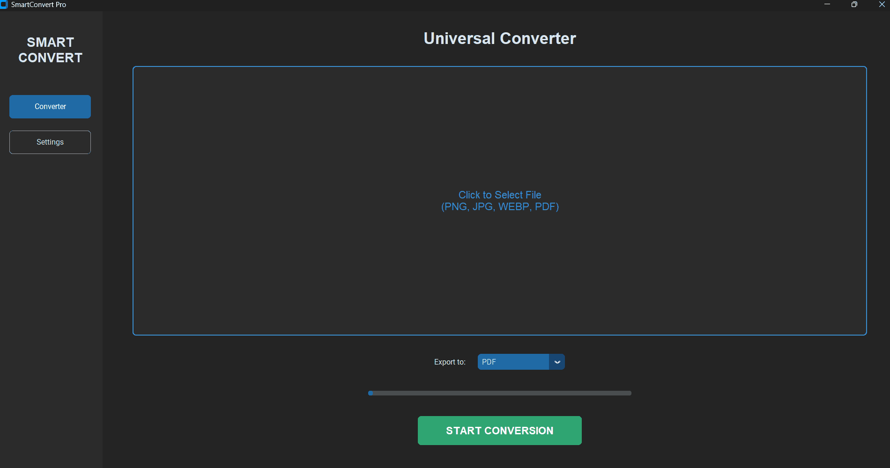

SmartConvert Pro — tasvirlarni sifatini yo'qotmasdan professional formatlarga o'tkazuvchi eng tezkor Windows desktop dasturi.

Dastur skrinshotini (app_screenshot.png) yuklang
Python algoritmlari yordamida bir nechta faylni soniyalar ichida qayta ishlang.
Fayllaringiz hech qayerga yuklanmaydi. Maxfiylik to'liq himoyalangan.
Dastur interfeysi 6 ta tilda professional tarzda tayyorlangan.